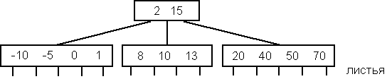
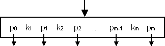
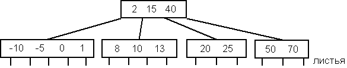

Дополнительный материал к теме "Индексы"
А. B-деревья
B-деревья - это динамические структуры данных, которые позволяют производить поиск с гарантированной эффективностью.
B-деревом порядка n называется дерево, обладающее следующими свойствами:
Вот пример B-дерева порядка 5:

Для дальнейшего рассмотрения будем предполагать, что страница B-дерева имеет следующий вид :

Здесь k - ключи, а p - указатели на потомков.
А.1. Поиск в B-дереве
Пусть имеется некоторая текущая страница и задан некоторый аргумент поиска x. На первом шаге последовательным или бинарным поиском осуществляется поиск значения x среди ключей k1...km. Если элемент найден, то поиск прекращается. Иначе возможны 3 случая:
Если нужный указатель p нулевой, то такого ключа в дереве нет.
А.2. Добавление нового элемента в B-дерево
Если нужно вставить элемент в B-дерево порядка n, его вставляют в страницу самого нижнего уровня между ближайшим большим и ближайшим меньшим ключами. Если страница теперь содержит n ключей (больше максимально допустимого (n-1)), ее расщепляют на две страницы.
Для этого выбирают средний элемент среди всех ключей страницы : K[n/2]. Первый узел содержит все элементы, которые левее среднего, второй - все элементы, которые правее среднего. Сам K[n/2] вставляется на подходящее место в узел - отец. Эта вставка, в свою очередь, может привести к расщеплению узла - отца. Если нужно расщепить корневой узел, то просто создают новый корень и помещают в него единственный ключ K[n/2], в этом случае дерево становится на единицу выше.
Для примера вставим в дерево элемент с ключом 25 . На первом шаге мы определяем, что его нужно вставить в правый узел. Но при этом мы обнаружим, что в нем будет 5 элементов, а может быть не больше 4:
Нам необходимо расщепить этот узел и поднять средний элемент на уровень выше. Средний элемент - третий элемент (40) - он будет включен в узел верхнего уровня.
В первом узле будут элементы 20 и 25 , а во втором 50 и 70. Наше дерево примет вид:

А.3. Удаление элемента из B-дерева
При исключении элемента из B-дерева можно выделить 2 случая:
Предположим, что у нас необходимо удалить элемент с ключом k[i] и мы хотим заменить его ближайшим меньшим элементом. Для поиска такого элемента необходимо сначала взять страницу, на которую указывает p[i-1]. После этого необходимо спуститься сверху вниз до страницы нижнего уровня P, переходя каждый раз на страницу, на которую указывает cамый правый указатель p[m] каждой страницы, заменить исключаемый элемент на самый правый элемент P и уменьшить размер P на 1.
После первого шага число элементов в странице может оказаться меньше минимально допустимого (n/2). В этом случае могут быть два варианта (мы рассматриваем наряду с P ее соседнюю страницу Q):
Если корень сократится до нулевого размера, то он удаляется и тем самым высота B-дерева уменьшается.
B-деревья широко применяются при построении индексов в системах управления базами данных. В Oracle для обычных индексов листья содержат ROWID соответствующих строк, а в таблицах, основанных на индексах - непосредственно данные.
© 1994-2001 Шеховцов В.А.